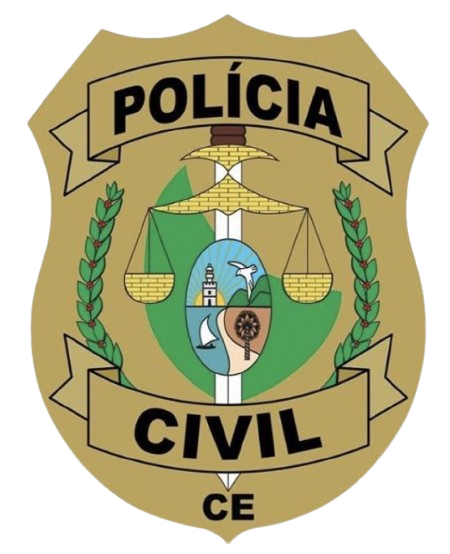
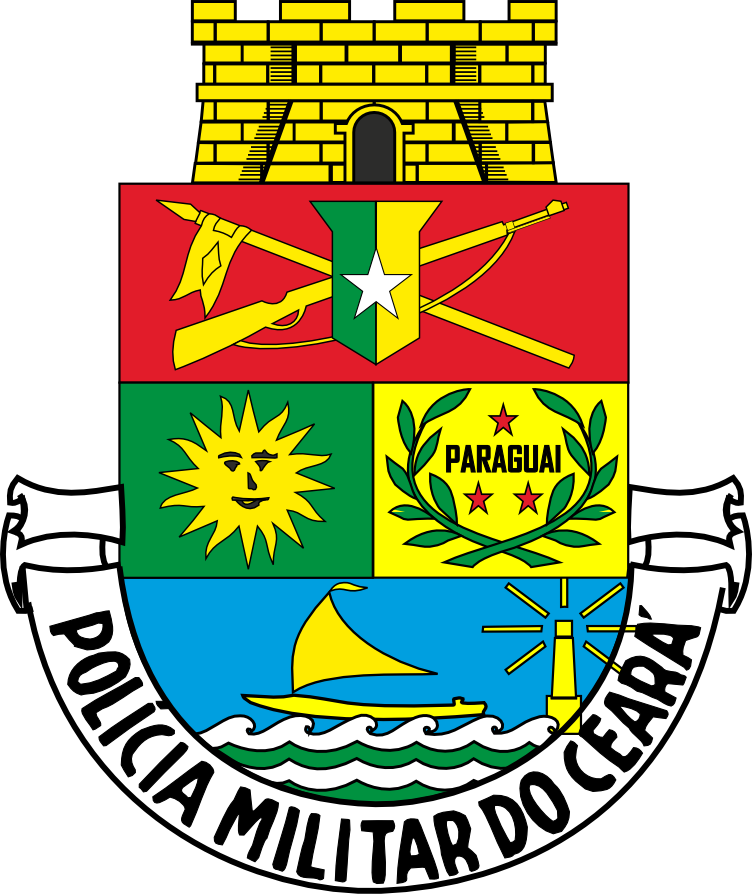

O curso preparatório em Legislação de Trânsito para concursos oferece uma abordagem especializada e abrangente para aqueles que desejam
ingressar na área de trânsito e transporte público, seja como agente de trânsito, fiscal de transporte ou em áreas correlatas.
Nosso programa é projetado para proporcionar aos alunos
uma preparação sólida e eficaz, abordando os principais aspectos da legislação de trânsito presentes nos editais dos concursos públicos.
Legislação de Trânsito
Professor experiente e qualificado, ministra aulas teóricas detalhadas, abrangendo os principais conceitos, leis, resoluções e normativas relacionadas à legislação de trânsito no Brasil.
Exploração aprofundada dos temas mais relevantes, como o Código de Trânsito Brasileiro (CTB), legislação de transporte, infrações, penalidades, medidas administrativas, sinalização e educação para o trânsito.
CURSOS
Legislação Policia Penal
O curso preparatório para o concurso de Polícia Penal foca na abordagem dos conhecimentos específicos exigidos para o cargo,
oferecendo uma preparação completa para enfrentar os desafios das provas com confiança e competência.
Legislação Policia Penal
Estudo de Legislação: Análise detalhada das leis, decretos, portarias e normativas relacionadas ao sistema prisional,
garantindo o domínio dos conhecimentos jurídicos necessários para o cargo.
Acompanhamento Individualizado: Acompanhamento próximo do desempenho de cada aluno, com feedback personalizado,
orientação de estudos e suporte para esclarecimento de dúvidas.

CURSOS
Legislação Policia Civil
Com uma abordagem abrangente e focada nos conhecimentos específicos exigidos para os diversos cargos da Polícia Civil,
nosso programa visa capacitar os alunos a enfrentar os desafios das provas com confiança e competência.
Legislação Policia Civil
Estudo de Legislação Específica: Análise detalhada das leis, códigos e procedimentos
legais relacionados à atividade policial, garantindo o domínio dos conhecimentos jurídicos necessários para as atividades investigativas.
CURSOS
Informática do Zero
Com um enfoque abrangente nos principais temas cobrados nos editais, nosso programa proporciona
uma preparação sólida e eficaz para os desafios tecnológicos presentes nos processos seletivos.
Informática do Zero
Apostilas elaboradas por profissionais qualificados, contendo todo o conteúdo necessário para uma preparação eficiente.
Material complementar, como vídeos explicativos e recursos online, para reforçar o aprendizado.
CURSOS
1000 Questões Informática
O curso de Resolução de 1000 Questões de Informática para Concursos é um programa
intensivo e focado na prática de resolução de questões específicas de informática presentes
em concursos públicos. Com uma abordagem prática e direcionada,
nosso curso visa proporcionar aos alunos uma preparação completa e eficaz para enfrentar os
desafios tecnológicos das provas de concursos.
1000 Questões Informática
Disponibilização de uma extensa base de dados contendo mais de 1000 questões de informática retiradas de concursos públicos de todo o país.
Questões atualizadas e categorizadas por tema, permitindo aos alunos concentrarem-se em áreas específicas de estudo.
Disponibilização de material complementar, como resumos, dicas de estudo e bibliografia recomendada, para reforçar o aprendizado e ampliar o
conhecimento dos alunos.

CURSOS
Direito Penal Militar
O curso preparatório em Direito Penal Militar para concursos oferece uma abordagem especializada e abrangente
para aqueles que almejam ingressar na carreira militar e desejam dominar os conhecimentos específicos dessa área do direito.
Nosso programa é projetado para proporcionar aos alunos uma preparação sólida e eficaz,
abordando os temas essenciais do Direito Penal Militar presentes nos editais dos principais concursos públicos.
Direito Penal Militar
Material didático completo e atualizado, proporcionando uma base sólida de conhecimento para enfrentar os desafios dos concursos públicos.
Suporte personalizado e acompanhamento contínuo para garantir o progresso e o sucesso dos alunos ao longo do curso.
Prepare-se de forma sólida e eficiente para conquistar uma vaga na carreira militar com o nosso curso preparatório em
Direito Penal Militar. Invista no seu futuro profissional e conquiste a aprovação desejada nos concursos públicos militares.